1과목: 일반기계공학
1. 담금질(quenching)한 강을 A1 변태점 이하 온도로 가열하여 공냉 등을 하여 인성을 증가시키는 열처리는?
2. 그림과 같은 타원 단면을 갖는 봉이 하중 200kgf의 인장하중을 받는다. 이 봉에 작용한 인장응력은 몇 kgf/cm2인가?
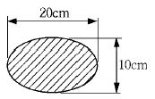
3. 금속 중 고체상태에서 어떤 온도에 도달하면 원자 배열이 변화를 일으키고 변태가 생기는데, 이것을 의미하는 용어로 가장 적합한 것은?
4. 디퓨우저(diffuser)펌프, 볼류트(Volute)펌프 등이 해당되는 펌프는?
5. 다음 중 고강도(高强度) 알루미늄 합금인 것은?
6. 볼 스크루는 볼이 스크루와 너트 사이에서 물리적인 접촉을 함으로써 회전운동에 의하여 작동하는 리드 스크루(lead screw)이다. 볼 스크루의 장점이 아닌 것은?
7. 다음 중 벨트전동장치에 대한 설명으로 옳지 않은 것은?
8. 그림과 같은 외팔보에서 폭 × 높이 = b × h 일 때, 최대 굽힘응력(σ max)을 구하는 식은?
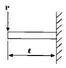
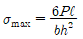
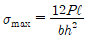
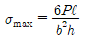
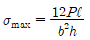
9. 그림과 같은 스프링장치에서 P = 10㎏f일 때 이 스프링의 수직 처짐량은 몇 ㎝인가? (단, 스프링 상수는 k1 = 2㎏f/㎝, k2 = 3㎏f/㎝ 이다.)
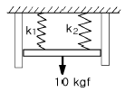
10. 다음은 황동에 대한 설명이다. 이들 중에 잘못 설명한 것은 어느 것인가?
11. 압연가공에서 압연전의 두께를 H0, 압연후의 두께를 H1 이라고 할 때 압하율을 구하는 식은?
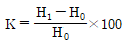
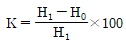
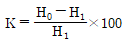
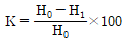
12. 지름이 40mm인 연강제 실축에 200rpm으로 10PS를 전달할때 생기는 전단응력은 약 몇 ㎏f/cm2 인가?
13. 가는 유리관을 액체속에 세웠을때 관을 따라 올라가거나 내려가는 모세관 현상에서 액면의 높이에 가장 큰 영향을 주는 것은?
14. 다음 중 선반에서 가공할 수 없는 것은?
15. 유압기기의 부속기기 중 유압 에너지의 축적, 압력보상, 맥동제거 및 충격 완충의 역할을 하는 것은?
16. 기계부품을 고정시킬 때 사용하는 삼각나사의 특징 중 사각나사와 비교한 특징으로 옳지 않는 것은?
17. 두께 1.5mm 인 연강판에 지름 25mm의 구멍을 펀칭할 때 펀칭력은 약 몇 ㎏f 이상이어야 하는가? (단, 판의 전단 저항은 20㎏f/mm2 이다.)
18. 코일 스프링의 단위 체적당 흡수되는 에너지를 크게 하려는 방법으로 가장 적합한 것은?
19. 판금작업에서 판재에 펀칭을 하여 불필요한 부분을 뽑아 버리고, 남는 것이 제품이 되는 작업은?
20. 선반에서 복식 공구대를 사용하여 그림과 같은 테이퍼를 가공하려할 때 공구대의 선회각도는 약 몇 도인가?
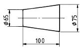
2과목: 유압기기 및 건설기계안전관리
21. 다음 중 유체 토크 컨버터의 구성 요소가 아닌 것은?
22. 다음 중 유량조절밸브에 의한 속도 제어회로를 나타낸 것이 아닌 것은?
23. 굴삭기 유압장치 정비시 안전한 작업방법은?
24. 미터-인 속도제어 회로로 실린더의 속도를 조정하는 경우 실린더에 인력(tractive force)이 작용하면 실린더 속도는 제어할 수 없게 된다. 이 때 이를 제어할수 있는 밸브는?
25. 건설기계 프레임 공장에서 아크 용접기의 감전방지를 위해 무엇을 부착하는가?
26. 다음 중 체적탄성계수의 설명이 잘못된 것은?
27. 축동력 7.4kW로 돌리는 베인펌프 송출압력이 70kgf/cm2, 송출유량은 53ℓ /min일 때 이 펌프의 전효율(全效率)은 얼마인가?
28. 기계설비의 본질적 안전화 대책에 해당되지 않는 것은?
29. 다음 유압유 중 점도지수가 낮고 비중(15℃)이 가장 커저온에서 펌프 시동시 캐비테이션이 발생되기 쉬운 유압유는?
30. 정비시 주의할 사항 중 거리가 먼 것은?
31. 다음은 굴삭기 작업시 주의 사항이다. 맞지 않는 것은?
32. 유압 프레스의 작동원리는 다음 중 어느 이론에 바탕을둔 것인가?
33. 안전표지의 도안에서 지시표지에 대하여 설명하였다. 맞는 것은?
34. 다음 그림은 유압 도면 기호에서 무슨 밸브를 나타낸 것인가?
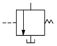
35. 트랙 장력이 강할 때 하부구동체의 마모 상태들이다. 이 중 거리가 먼 것은?
36. 건설기계에서 사용되고 있는 보기와 같은 유압모터 회로의 명칭으로 가장 적합한 것은?
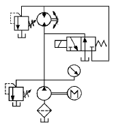
37. 공장에서 작업자가 작업시 꼭 알아두어야 할 사항은 다음 중 어느 것인가?
38. 토출압력이 70kgf/cm2, 토출량은 50ℓ /min인 유압 펌프용 모터의 1분간 회전수는 얼마인가? (단, 펌프 1회전당 유량은 Qn = 20 cc/rev이며, 효율은 100%로 가정한다.)
39. 드릴링 머신 작업의 안전수칙으로 적당하지 않은 것은?
40. 건설기계 엔진을 이동시키는 방법 중 가장 올바른 것은 어느 것인가?
3과목: 내연기관
41. 기관의 평형에 영향을 미치는 부품으로만 짝지어진 것은?
42. 다음에 열거한 디젤기관의 연소실 중 가장 노크를 일으키기 쉬운 것은?
43. 다음은 디젤기관에서 조속기의 고유기능에 대한 설명이다. 맞는 것은?
44. 자동차용 대체 연료 중 수소 연료의 특징이 아닌 것은?
45. 브레이턴 사이클의 열효율이 50%라면 압력비 Ø 는 얼마가 되는가? (단, 비열비 K=1.38이다.)
46. 배기관 압력이 증가하면 기관출력이 저하하는 가장 큰 이유는?
47. 내연기관에서 밸브 클리어런스(valve clearance)를 필요로 하지 않는 밸브 식은 어느 것인가?
48. 아래 그림과 같은 오토사이클의 이론적 P-V선도에서 연소실 체적은 어느 것인가?
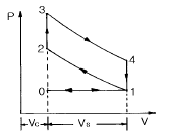
49. 다음에서 세미 디젤기관(소구기관)에 대한 설명중 특징이 아닌 것은?
50. 자동차의 전후진동을 감소시키기 위한 방법이 아닌 것은?
51. 다음 중 인화점이 가장 낮은 것은?
52. 실린더 벽의 마모량은 실린더의 길이 방향으로 모두 같지가 않다. 그 이유는 무엇인가?
53. 가솔린기관의 고속회전시 회전력이 저하되는 가장 큰 원1인은?
54. 기관 엔진오일의 양이 규정이상으로 많아지는 원인은?
55. 행정체적 2.0ℓ 인 4행정 사이클 가솔린기관에서 압축비가 8.5 일 때 이론일을 구하면? (단, 흡기는 표준 대기이고, 혼합비는 14.7:1, 연료의 저위발열량은 42.7MJ/kg, 비열비 1.4, 공기밀도 1.29kg/m3이다.)
56. 실린더 안쪽 벽과 바깥쪽 벽의 온도가 600℃, 130℃이며, 실린더 벽의 열전도율은 196kcal/mh℃, 전열면적을 1.5m2이라면 전 열전달량은 몇 kcal/h 인가? (단, 벽의 두께는 8mm 이다.)
57. 58. 디젤기관의 분사노즐 중 분사초기에는 적은 양이 분사되다가 점차 분사량이 많아지게 되는 가변오리피스형 노즐은?
58. 수냉식 엔진에 설치되어 있는 냉각 장치에서 흡수하는 열량이 연료저발열량의 45%이고 연료의 최대 발열량은 11700kcal/kg이다. 이 기관의 연료소비율은 180g/PS∙h이고 냉각수 온도 상승 한계가 20℃때 이 엔진은 몇 ℓ 의 냉각수를 필요로 하는가? (단, 냉각수의 비열은 1 kcal/kg℃ 이다.)
59. 가솔린 기관의 성능에 영향을 미치는 중요한 인자가 아닌 것은?
60. 디젤기관의 유해 배출가스 중 양이 상대적으로 가장 작은 것은?
4과목: 건설기계정비
61. 건설기계 유압회로에서 여분의 유압유를 합류시켜 작동기 속도를 증가시키는 밸브는 다음 중 어느 것인가?
62. 쇠스랑(scarifier)작업을 하기 어려운 장비는?
63. 직접 분사실식 디젤기관에 알맞는 노즐은?
64. 작업중이던 도져 엔진이 시들시들 저절로 꺼지면 어느것부터 점검해야 하는가?
65. 아스팔트 프랜트의 구성장치가 아닌 것은?
66. 기관에서 회전력이 25kgf-m이고, 회전수가 1000rpm일 때 이때 기관의 제동마력은 몇 ps인가?
67. 기관의 윤활유가 우유색을 띄우고 있다. 그 원인은?
68. 다음의 언더 케리지(Under Carriage)부품을 정비할 때 가장 위험성을 내포하고 있는 것은?
69. 서보 유압밸브 중 2단 서보 밸브(two stage servo valve)의 피드백(feed back) 형식에 속하지 않는 것은?
70. 고속 디젤기관에서 터보차저의 배기가스 압력을 조정하여 흡기되는 공기량를 가감하는 장치는?
71. 피스톤의 평균속도가 25m/s이고, 행정이 120cm일 때 기관의 회전수는 얼마인가?
72. 기관본체 정비시 다이얼게이지를 사용하여 측정할 수 없는 항목은 어느 것인가?
73. 다음은 어큐뮬레이터(accumulator:축압기)의 에너지 축적 방법에 의해 분류하였다. 이 중 틀린 것은?
74. 매커덤 로울러(macadam roller)에는 차동장치가 있다. 그 목적에 대하여 설명한 것은?
75. 24V 전원에 50W짜리 전조등 4개를 병렬로 연결했을 때 소요되는 전류의 량은?
76. 로우더의 붐을 상승시켜 놓고 잠시후 살펴보니 붐이 상당량 하강되었다. 붐이 하강되는 원인이 아닌 것은?
77. 다음은 커넥팅 로드(connecting rod)에 관련된 설명이다. 알맞은 설명은?
78. 다음 중 크롤러식 유압 굴삭기의 주행 동력으로 이용되는 것은?
79. 유압장치의 정비에 관한 사항 중 틀리는 것은?
80. 휠 구동식 장비의 제동장치 중 공기탱크로부터 공기를 브레이크 쳄버로 공급 또는 단속하는 역할을 하는 부품은?
5과목: 기계열역학
81. 순수한 물질로 된 밀폐계가 가역단열 과정 동안 수행한 일의 양은? (단, 절대량 기준으로 한다.)
82. 압력이 100 kPa이며 온도가 25℃인 방의 크기가 240m3이다. 이 방안에 들어있는 공기의 질량은 약 얼마인가? (단, 공기는 이상기체로 가정하며, 공기의 기체상수는 0.287 kJ/kg∙K이다.)
83. 다음 사항중 틀린 것은 ?
84. 250 K에서 열을 흡수하여 320 K에서 방출하는 이상적인 냉동기의 성능 계수는?
85. 압력 P1, P2사이에서(P1＞P2) 작동하는 이상 공기 냉동기의 성능계수는 얼마 정도인가? (단, P2/P1 = 0.5, k = 1.4이다.)
86. 복수기(응축기)에서 10 kPa, 건도x = 0.96 인 수증기를 매시간 1000kg 응축시키는 데 필요한 냉각수의 유량은? (단, 냉각수는 15℃에서 들어오고 25℃에서 나간다. 그리고 10kPa의 포화액과 포화증기의 엔탈피는 각각 hf = 191.83 kJ/kg hg = 2584.7 kJ/kg이며, 물의 비열은 4.2 kJ/kg∙K 이다.)
87. 재열 및 재생 사이클에 대한 설명 중 맞는 것은?
88. 대기압이 95 kPa 인 장소에 있는 용기의 게이지 압력이 500 cmH2O를 나타내고 있다. 용기의 절대압력은?
89. 계 내에 임의의 이상기체 1kg이 채워져 있다. 이상 기체의 정압비열은 1.0 kJ/kg∙K이고, 기체 상수는 0.3kJ/kg∙K이다. 압력 100kPa, 온도 50℃의 초기 상태에서 체적이 두 배로 증가할 때까지 기체를 정압과정으로 팽창시킬 경우, 필요한 열량은 약 몇 kJ인가? (단, 비열비 =1.43 이다.)
90. 다음 중 이상적인 오토사이클의 효율을 증가시키는 방안으로 모두 맞는 것은?
91. 다음 설명 중 맞는 것은?
92. 비가역 단열변화에 있어서 엔트로피 변화량은 어떻게 되는가?
93. 노즐(nozzle)에서 단열팽창하였을 때, 비가역 과정에서보다 가역과정의 경우 출구속도는 어떻게 변화하는가?
94. 마찰이 없는 피스톤이 끼워진 실린더가 있다. 이 실린더내 공기의 초기 압력은 300 kPa 이며 초기 체적은 0.02m3이다. 실린더 아래에 분젠 버너를 설치하여 가열하였더니 공기의 체적이 0.1m3 로 증가되었다. 이 과정에서 공기가 행한 일은 얼마인가?
95. 압력용기 속에 온도 95℃, 건도 29.2％인 습공기가 들어있다. 압력이 500kPa일때 비체적(V)과 내부에너지(U)은 약 얼마인가? (단, V, U의 단위는 m3/kg, kJ/kg이고, 95℃에서 포화액체 V'= 0.00104, 건포화증기 V" = 1.98,포화액체 U'= 398, 건포화증기 U" = 2501 이다.)
96. 그림과 같은 오토사이클의 열효율은? (단, T1=300K, T2=689K, T3=2364K, T4=1029K 이다.)
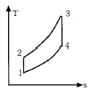
97. 가역 단열 과정에서 엔트로피는 어떻게 되는가?
98. 단열 밀폐된 실내에서 [A]의 경우는 냉장고 문을 닫고, [B]의 경우는 냉장고 문을 연채 냉장고를 작동시켰을 때 실내온도의 변화는?
99. 다음 사항 중 틀린 것은?
100. 열역학 제 2법칙에 대한 설명 중 맞는 것은?